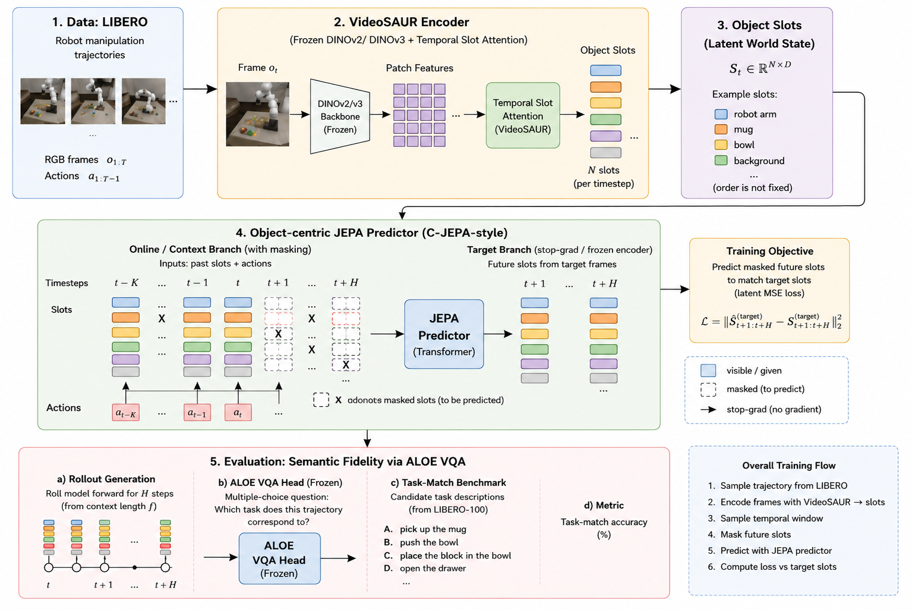
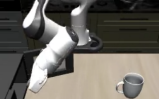
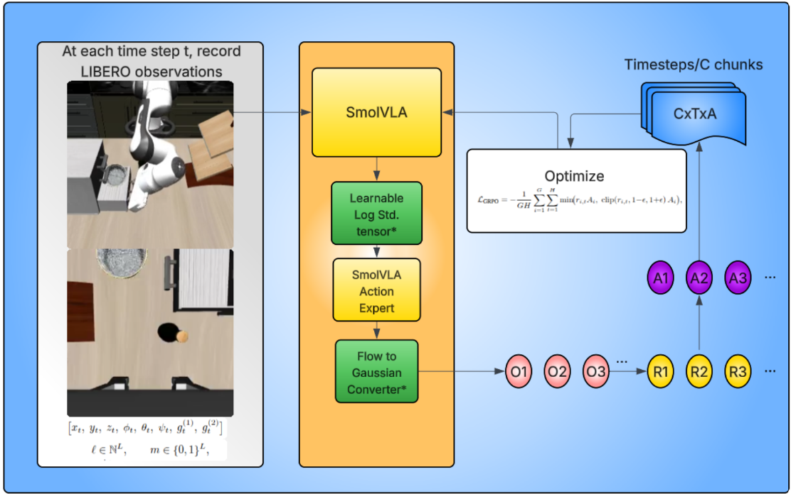
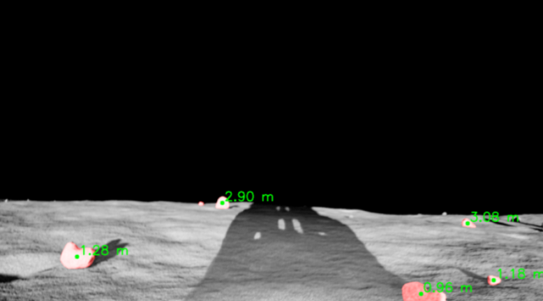
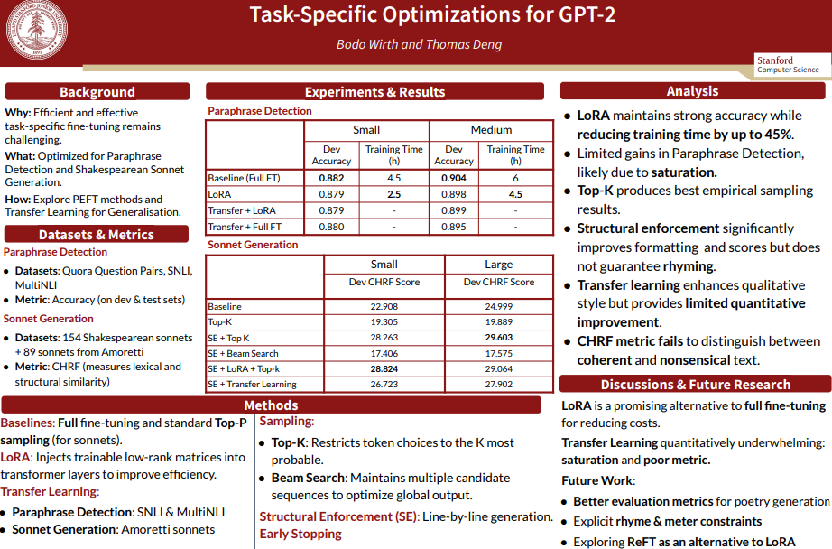
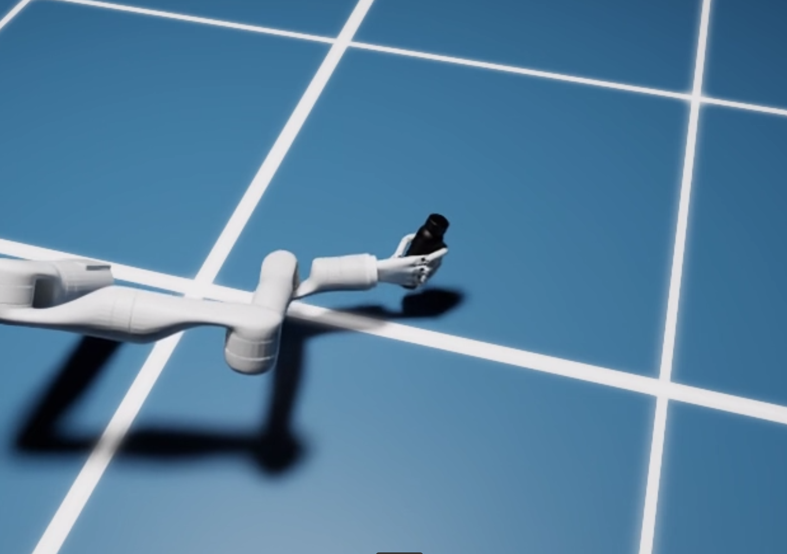
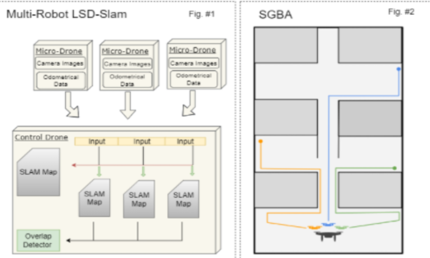
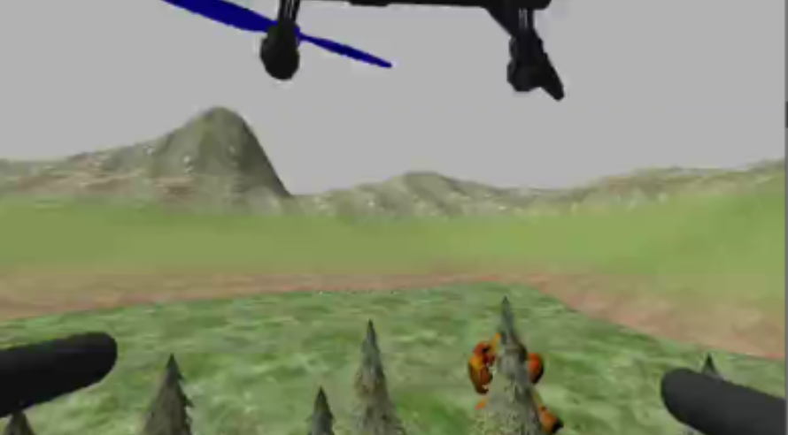
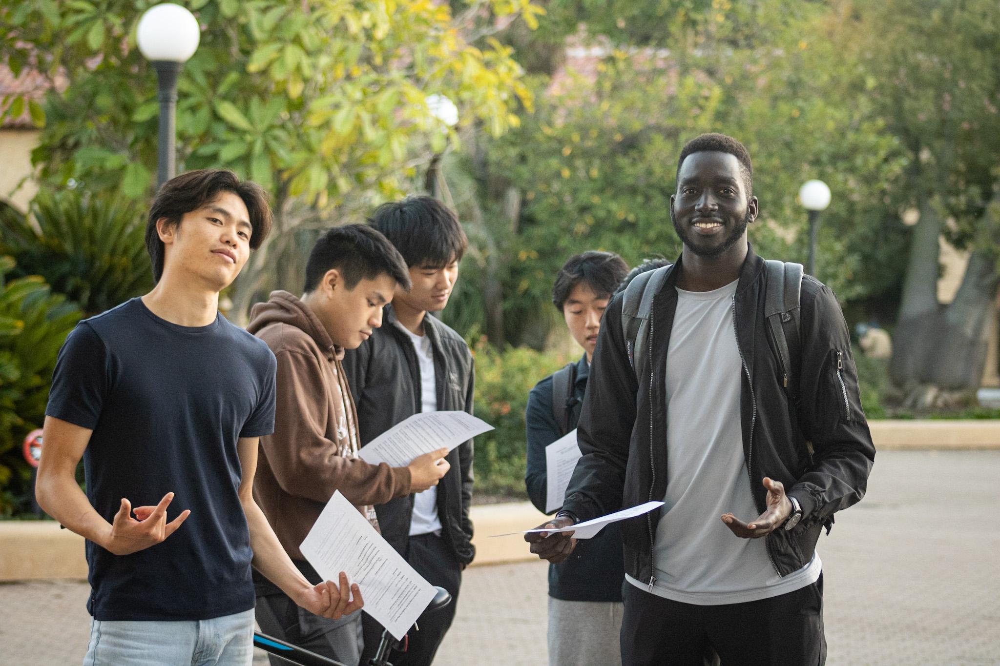

THOMAS DENG
Robotics • Autonomous Vehicles • Machine Learning Research
About Me
Hello! I am a junior at Stanford studying Computer Science. I work on robotics, autonomous vehicles, and machine learning at the Interactive Perception and Robot Learning Lab as part of the Stanford AI Lab, and also at the Stanford Robotics Center. I build and research systems that combine learning-based architectures with classical robotics, focusing on understanding and improving VLA models and learning-based perception.
Research and Publications

LIBERO-JEPA: Learning Action-Grounded Dynamics in Object-Centric World Models
Developed an object-centric world model for robotic manipulation using VideoSAUR slot representations and a JEPA-style transformer predictor. Discovered that standard world model objectives learn nearly action-invariant dynamics despite explicit access to robot actions. Proposed a contrastive action loss that improves action grounding and long-horizon semantic prediction on LIBERO-100.

Reinforcement Learning for Vision-Language-Action Models
Exploring stability and performance of Group Relative Policy Optimization (GRPO) for VLA models. Implemented robotics RL infrastructure and developed methods for improving performance across LIBERO manipulation benchmarks.

Safe Robot Steering
Analyzing GRPO RL fine-tuning effects on SmolVLA across LIBERO tasks. Implemented mechanistic interpretability techniques for VLA models.

NASA Lunar Autonomy Challenge
AI-driven lunar rover navigation pipeline for the NASA Lunar Autonomy Challenge. Integrated LangSAM for rock segmentation, Depth Anything V2 for depth estimation, stereo disparity for geometry, and arc-based Dubins trajectories for safe local planning and waypoint following within NAVLab’s full autonomy stack.

Stanford NAVLab Autonomous Vehicles Research
Path-planning and simulation research using Unreal Engine's AirSim and Carla.

Task-Specific Optimizations for GPT-2
Stanford CS224N final project investigating parameter-efficient fine-tuning with Low-Rank Adaptation (LoRA) on GPT-2 to reduce training costs without sacrificing accuracy.
Fun Projects

ClaudeGen: Autonomous Skill Generation for Dexterous Manipulation
Developed an autonomous data generation pipeline where Claude writes, debugs, and iteratively improves robot motion scripts in NVIDIA Isaac Sim. By closing the loop between LLM-generated code and simulation feedback, the system produces large-scale manipulation demonstrations without human teleoperation.
Egocentric Human-to-Robot Hand Retargeting
Pipeline that converts egocentric human videos into robot manipulation data: Detectron for hand detection, ViTPose for 2D keypoints, HaMeR for 3D hand reconstruction into MANO parameters, then dexterous retargeting with inverse kinematics onto a robot hand. The resulting trajectories are warped and randomized with Real2Render to generate large-scale robotic data for imitation learning. (Randomization and trajectory warping were handled within the Real2Render repo.)

MIT THINK Finalist Project
Deployment of a collectively optimized swarm of autonomous micro UAVs for accurate 3D reconstruction of destroyed buildings during disaster recovery.

FireSense
Wildfire detection system using CNNs on an autonomous drone.

The Akeer Foundation
Akeer Foundation: My friends and I are founding a K-12 school in South Sudan. I believe that education and opportunity are inalienable rights, and every step toward universal access sets a precedent of hope for the hundreds of millions who never had these liberties.
Personal
I enjoy playing basketball and soccer. On the road to win an IM championship. As a Philly native, I am a lifelong 76ers fan, unfortunately... Also, current Warehaus dorm ping pong champion!
I have also dabbled in music production! Here is a track I made: